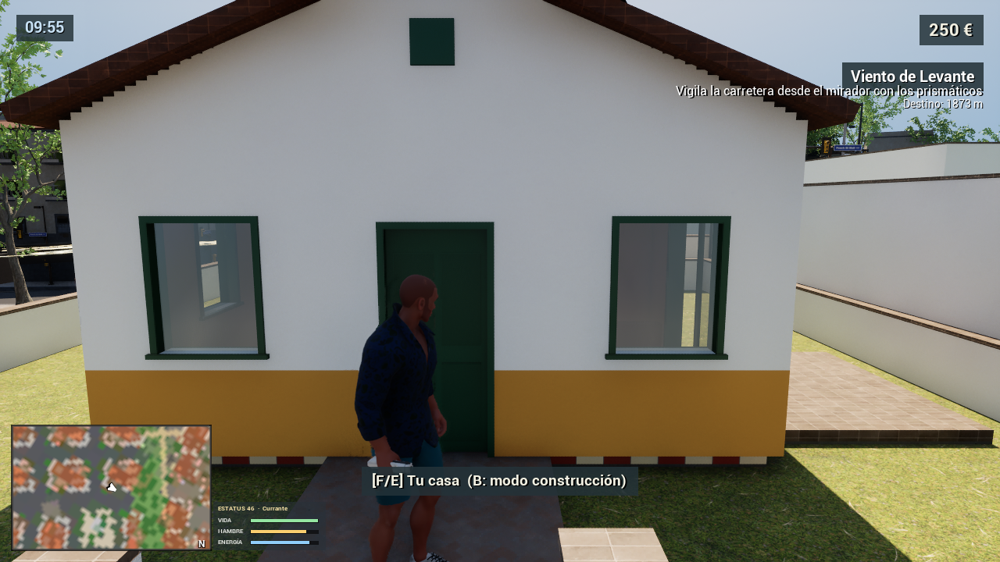

PISA A FONDO
Coches con física real, cambio manual con embrague, una moto deportiva y una lancha para salir al mar.
UN JUEGO DE MUNDO ABIERTO · PVBLO ESTUDIOS
Una vida nueva. Un barrio por descubrir.
Costa, vecinos y segundas oportunidades.
Barrio Libre es un juego independiente de mundo abierto, hecho a mano y con acento propio. La ciudad y sus sistemas siguen en construcción: esta web crece al mismo ritmo que el juego.
Algunas de las cosas que ya funcionan en el desarrollo. Todo puede cambiar antes del lanzamiento.
Coches con física real, cambio manual con embrague, una moto deportiva y una lancha para salir al mar.
Repartos, viajes en taxi y encargos por la ciudad. Cobra, ahorra en el banco y gasta en las tiendas del barrio.
Mensajes, encargos, viajes y tu cuenta del banco, siempre en el bolsillo.
Emisoras propias para recorrer la costa con la ventanilla bajada.
Vecinos que pasean, charlan y reaccionan a lo que haces. Aquí todo el mundo se conoce.
Hay testigos. Y la policía tiene buena memoria. Cada decisión pesa.

Calles estrechas, casas con historia, el polígono, la sierra y el paseo junto al agua. Barrios distintos para que la ciudad se sienta viva y cercana.
Imágenes reales del proyecto mientras lo construimos. El aspecto final puede cambiar.
Barrio Libre está en desarrollo activo. Primero, construir bien el juego; después, llevarlo a quienes quieran recorrerlo.
La idea es publicarlo como un juego completo de pago. Precio, fecha y plataformas están por anunciar. Si el proyecto empieza a generar ingresos, se reinvertirán en seguir mejorándolo.